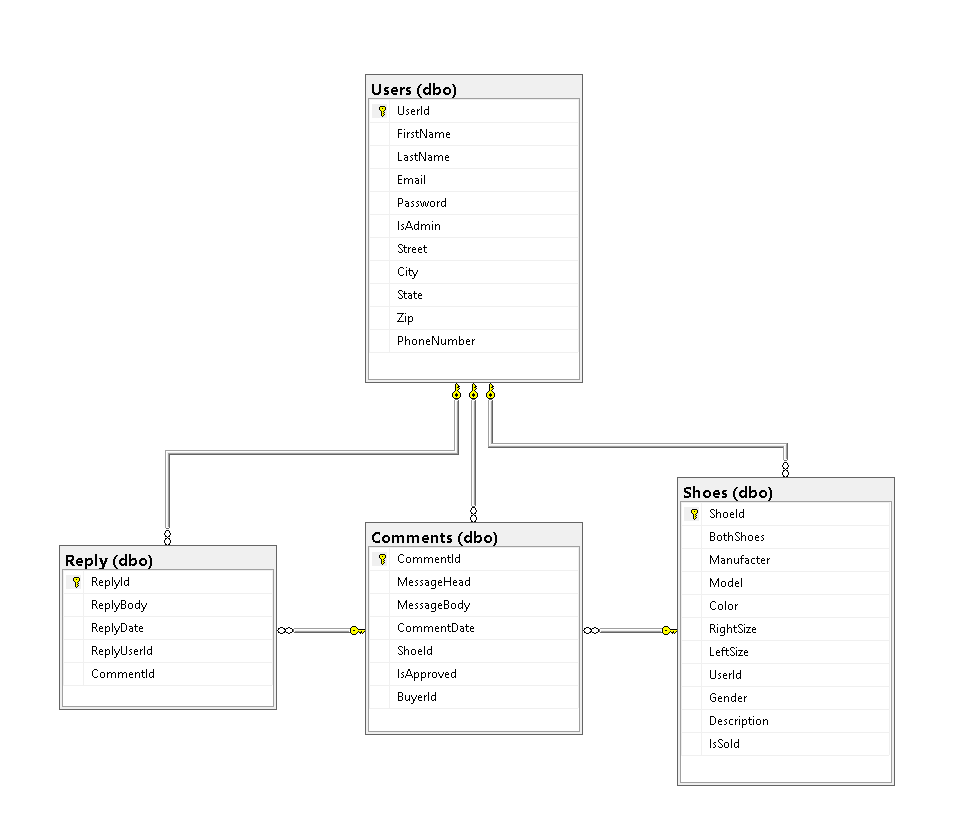

This web application was built with 3 applications working together.
The "Client Application" is what you're seeing right now. This single-page web website that powered by Angular. ShoelessJoe is written in 3 major lanbuges TypeScript, HTML, and CSS.
A link to the repository or GitHub. github.com/TClaypool00/ShoelessJoeClient
The "Backend Application" is written in C# and is responsible for things going on "Behind the Scences." ShoelessJoe uess a RESTFul API. The API is responsible for four jobs.
A link to the API repository ong GitHub: github.com/TClaypool00/ShoelessJoeAPI
ShoelessJoe use a Relational Dtabase in 3rd Form Normalization. It is written in SQL Server and is hosted on an Azure SQL Server. It has 4 entities Users, Shoes, Comments, and Replies. Each with it's own set of properties.
